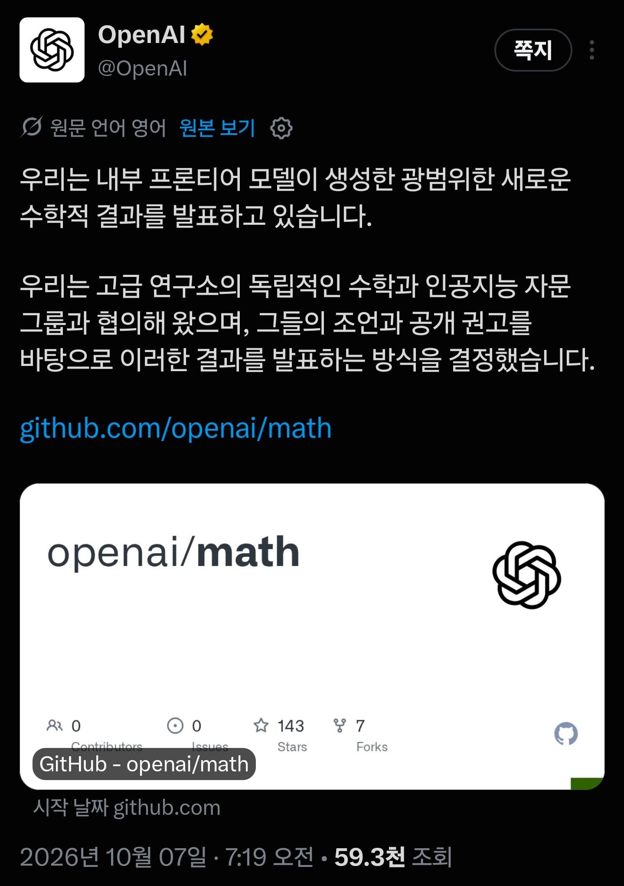
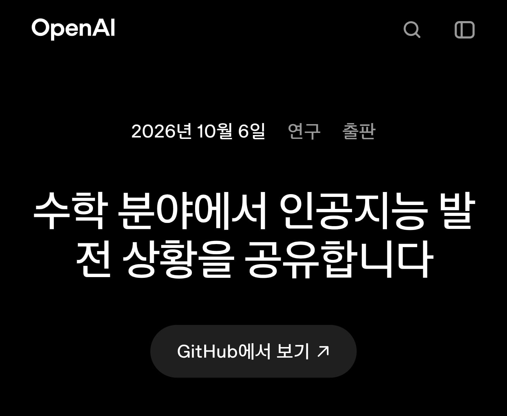
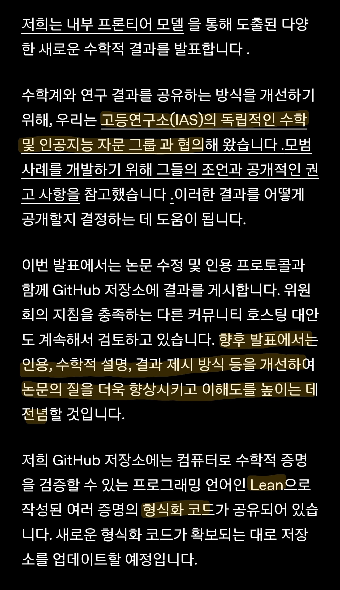
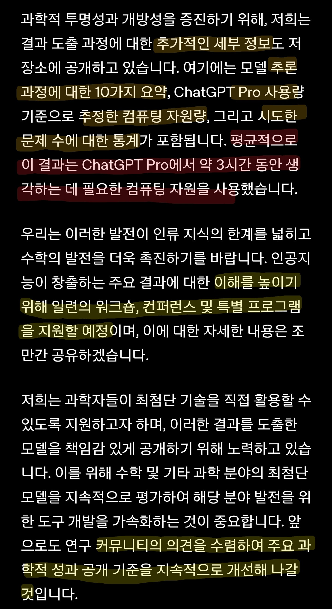
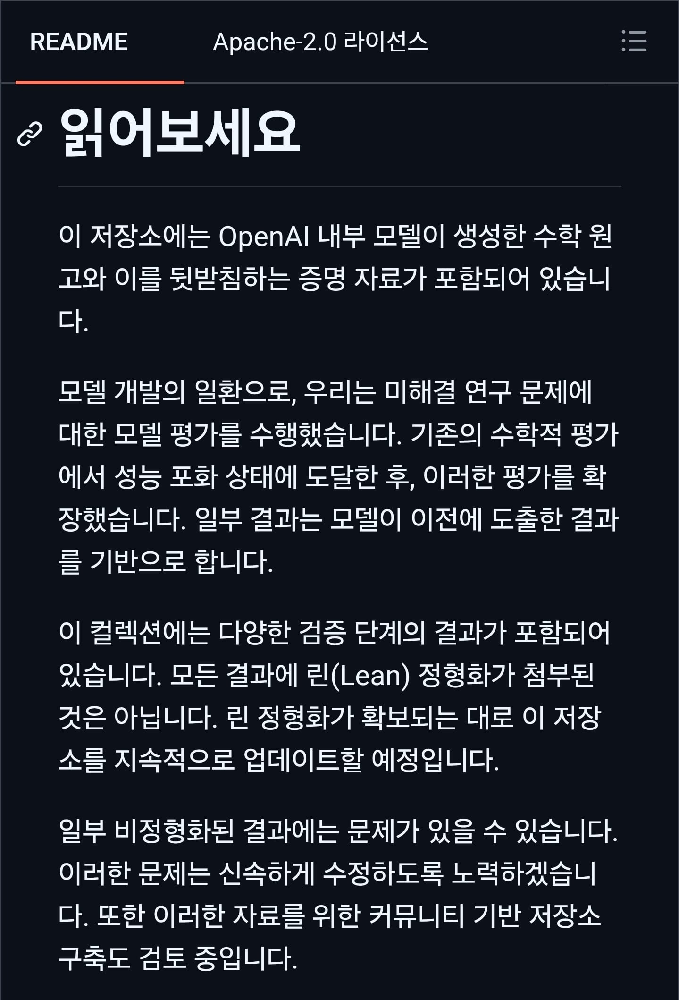
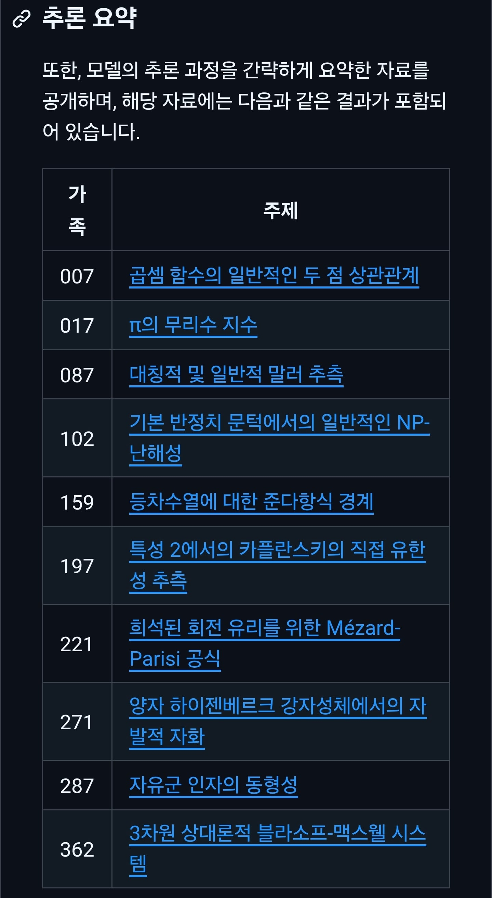
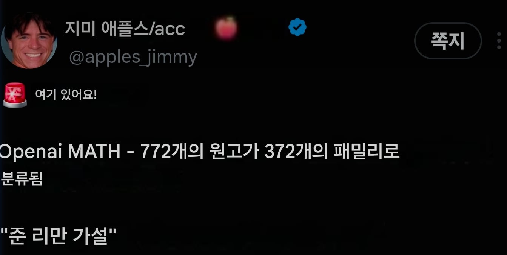
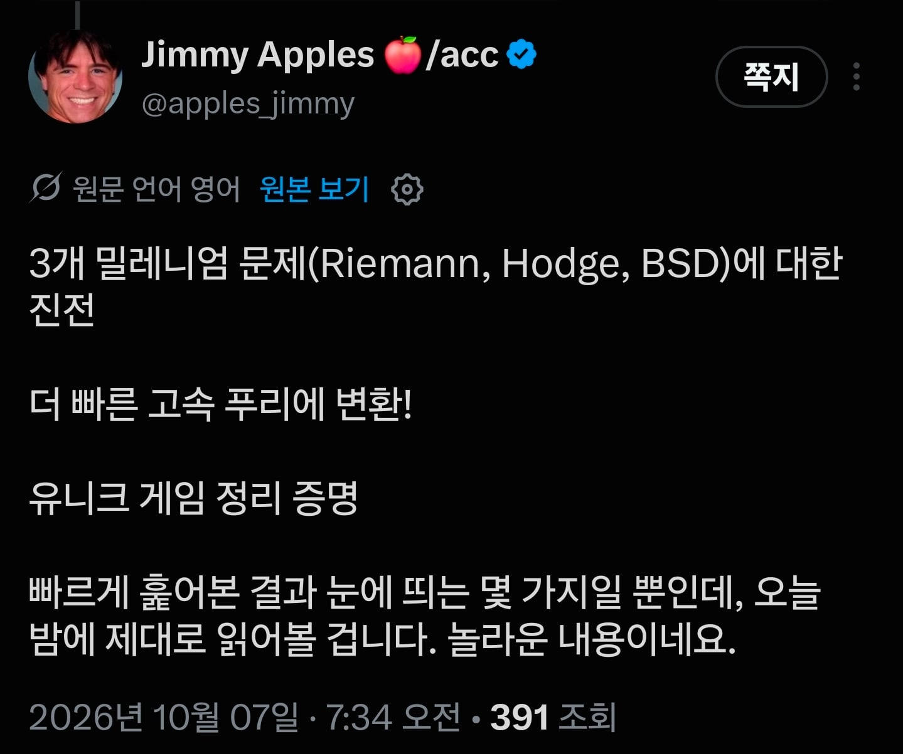
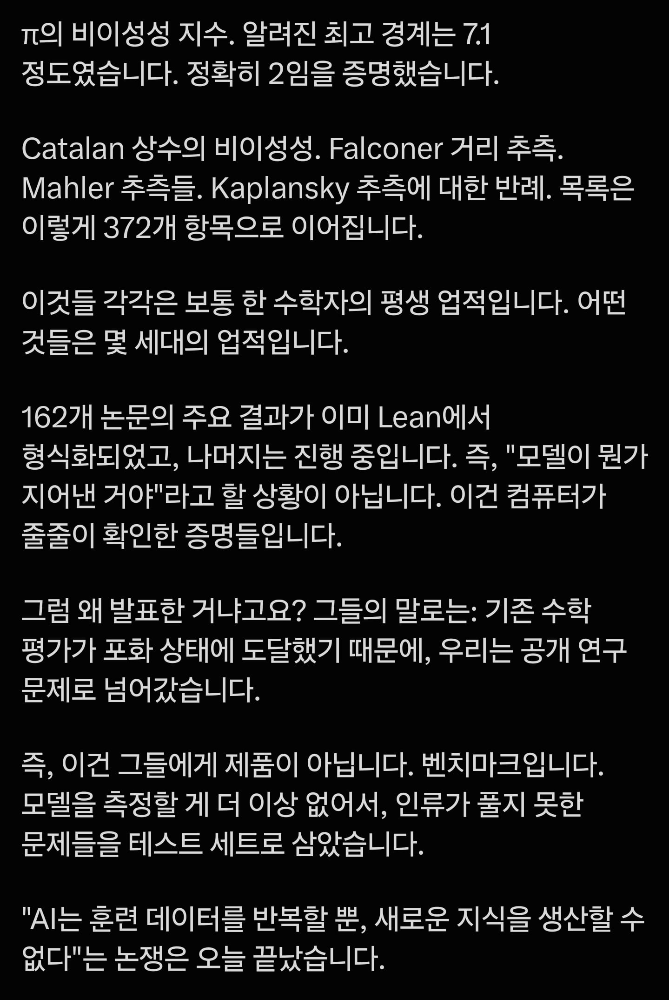
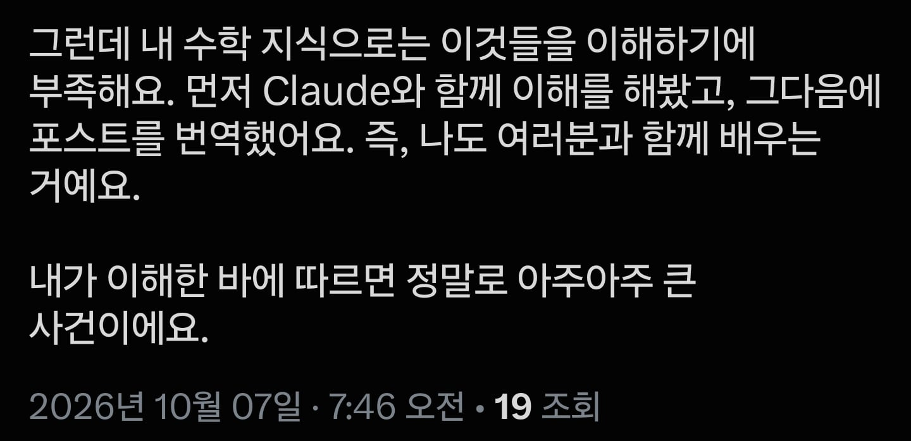

https://gall.dcinside.com/mgallery/board/view/?id=thesingularity&no=1464503










알파고vs 이세돌 급 모먼트
https://gall.dcinside.com/mgallery/board/view/?id=thesingularity&no=1464503










알파고vs 이세돌 급 모먼트
모델이랑 사용량이나 제대로 해라
공개 된거 보면 모델은 그냥 내부 모델이라고 되어 있는데 이게 수학자들이 접근 못함 ㅋㅋㅋ
10년 내로 대부분의 수학자는 쓸모가 없어질 거라니까 비웃던 개붕이 생각나네ㅋㅋ
10년은 너무 길어서 웃었나봐
제일 무서운건 정보의 공유가 끝나는거임
이제 저기서 스스로 문제를 만들고 풀고 반복한다면
학계 학회 따위 알게뭐고 성취를 공유할 이유가 사라짐....
그러게
증명의 속도나 증명할 수 있는 수준을 넘어가버리면 이미 게임오버잖아..
그게 환각이 아니라면 더더욱.. ㅅㅂ..
그럼 남은 인력은 뭐하지?
전쟁이라도 해야하나
즐기면 됨
누가 요약 좀 부탁 드립니다
환각 아니고 ㄹㅇ 증명이겠지? 대박이네
이제 진지하게 보고서 만들어줘~ 디자인 해줘~ 해줘만 해도 일이 되는 세상 얼마 안남은 것 같다
알겠고 자율주행이나 삘리만들어줘 운전하기 싫어…
이 뉴스 보면서 든 생각
대체 리만은 뭐하는 새끼였길래 AI 나올 때까지 못푸는 가설을 저렇게 쌓아둔겨?
스승 : 역사상 수학하면 무조건 거론되는 인물
본인 : 우울증 천재
TS...시켜야겠지?
인류<<<로봇 ㄷㄷ
아니 알았으니깐 개꿀 빨면서 살 수 있게 빨리 만들어 달라고
증명이 전부 치팅이나 환각없이 의미가 있는것들로 판명 나야 저게 됐다고 할 수 있음. 설레발은 안쳐도 되는 정도..
근데 이정도 되면 AI업계가 첫 타겟으로 코딩쪽보다는 수학계를 아주 묵사발 낼 각오내지 그게 목표인 채로 임하고 있다는 느낌이네..
놀랍게도 프로그래밍과 수학 증명은 논리적으로 동일하다. 둘이 같이 조져지는 게 이상하지 않다.
그렇긴 한데 그래도 뭐 시멘트 퍼나르는 사람이랑 시멘트를 얼마나 단단하게 만들지 연구하는 사람은 또 다른분야니께.. 영향이 적다고는 못하겠지만.
lean으로 형식증명이 된거라 환각은 없다고 보면됨
증명 맞는지 제미나이 돌려봐라
증명 오류 없다는게 검증된건 맞음?
리만꺼 증명하면 그걸 바탕으로 엄청난 기술이 나올려나?
ㄴㄴ 이미 리만가설이 맞다고 전제하고 여러 다른 것들을 해놓은 것들이 있음
이미 리만가설은 상당수 영역에서 적용해도 문제가 없게 돌아감
그게 모든 영역에서 잘 적용된다고 증명하는 게 관건인데, 실용적으로는 별 차이없음
신기하네 증명이 안되어도 이미 적용해서 사용중이구나 ㅋㅋ
'모든 수'에 대해 리만가설이 옳은지를 증명 못한 것뿐이지 꽤나 넓은 영역에 리만가설이 옳은 건 이미 확인되었으니까..
나도 전공자는 아니지만 대충 그렇게 들었음 ㅇㅇ
9월에 얘기나왔던 나비에-스토크스 방정식도 180년짜리 난제지만 잘 써먹고 있었음. 비행기 잘 타고 다니잖아? 비행기 날개 주위 유체역학이랑 연관된 식임
비행기 날리는 것도 증명 없이 날리는중임 ㅋㅋㅋ
공개하는 것만 해도 이정도인데...
하나 또 풀었으니 기념하는 의미로 공짜토큰 뿌렸음 좋겠네
도대체 리만은 뭐 였을까?
살아있는 аi인가 ?
결국 검증이 문제 아닐까
맞다는 가정하에 풀어놓은건 많지 않나
대부분 증명의 증명이 안되어 미제로 남은건데
아마 비슷한 수준일거임
저거 하느라 pro 주간 한도 반토막 내고
sol이랑 아스트라 tps 1/3 토막 낸 건가